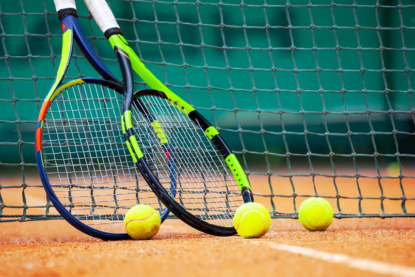

ჩემი საყვარელი სპორტია ტენისი,ბავშვობაში დავდიოდი,მაგრამ გამოვედი და დიდი იმედი მაქ კიდევ შევალ.
ჩოგბურთი ერთ-ერთი ყველაზე პოპულარული სპორტია,
როგორც დიდი სპორტის ნაწილი თუ უბრალოდ როგორც დროის სასიამოვნოდ გატარების საშუალება.
ისტორიკოსების უმრავლესობის აზრით, ჩოგბურთი XIII საუკუნის საფრანგეთში ჩაისახა.
თუმცა დღემდე გამოცანად რჩება, თუ ვინ ითვლება ამ თამაშის ნამდვილ ფუძემდებლად.
საჩოგბურთო მოედანს კორტი ჰქვია.
თამაშები ერთეულთა და წყვილთა თანრიგებში ტარდება.
მოთამაშეების ამოცანაა ჩოგნის დახმარებით ბურთი გადაიტანონ მოწინააღმდეგის ნახევარზე.
ჩამწოდებელ მოთამაშეს ბურთის ორჯერ ჩაწოდების უფლება აქვს.
მეორე ჩაწოდებას ის იყენებს მაშინ, თუ პირველი ვერ ჩააგდო ჩაწოდების მოედანში ან ბადეს ვერ გადააცილა.
ერთ მოგებულ გათამაშებაზე მოთამაშეც ეწერება 15 ქულა, შემდეგ მოგებულზე ასევე 15, მესამეზე კი 10 ქულა.
ხოლო, მეოთხე მოგებულ გათამაშებაზე ჩოგბურთელი უკვე იგებს. თუ ანგარიში თანაბარია,
მაშინ ერთ-ერთმა მოთამაშემ ზედიზედ 2 გათამაშება უნდა მოიგოს.
6 თამაშის მოგების შემთხვევაში მოთამაშე იგებს სეტს. თუ ანგარიში 6:6-ია,
მაშინ ხდება დამატებითი გათამაშება, რომელსაც ფრემტეხი (ე.წ. „ტაიბრეიკი“) ჰქვია.
ჩოგბურთელმა უნდა მოიგოს 2 სეტი თამაშის მოსაგებად.

თუ მეტის გაგება გნებავთ ტენისზე დააკლიკეთ აქ:
ჩემი საყვარელი წიგნი
ჩემი ერთ-ერთი ყველაზე საყვარელი წიგნია მე ბებია,ილიკო და ილარიონი რამდენჯერაც არ უნდა წავიკითხო ეს წიგნი არასდროს მბეზრდება
სულში მაქ ჩაბეჭდილი,
რაგდან ზოგადად ძველ ქართულ ნაწარმოებებზე ვგიჟდები,
უმეტესობას ძალიან მნიშვნელოვანი შინაარსი გააჩნიათ.
ნოდარ დუმბაძე ბავშვობიდან ჩემი საყვარელი მწერალი იყო, მისი ბევრი ნაწარმოები მაქ წაკითხული,და თითოეულზე ვგიჟდები.
იგი ჩემი ერთ-ერთი ყველაზე საყვარელი მწერალია,
არც კი ვიცი რა ვთქვა, დარწმუნებული ვარ, რომ ამ მწერლის შემოქმედება საუკუნეებს გაუძლებს.
ბავშვობიდან მეუბნებოდნენ რომ წიგნი ძალიან მნიშვნელოვანია გონებრივი განვითარებისთვის,რასაც ვეთანხმები რადგანწიგნის როლი საზოგადოებაში ძალიან დიდია,
მიუხედავად იმისა,რომ არსებობს ქვეყნები სადაც უწიგნურობის პრობლემა საკმაოდ მწვავედ დგას.
წიგნს დიდი როლი აკისრია ახალგაზრდების ჩამოყალიბებაში. ყველა ადამიანმა ასაკის შესაფერისი წიგნი უნდა იკითხოს,
რადგან ისინი წიგნის მეშვეობით სწავლობენ ეროვნულ სულისკვეთებას , კულტურას, გმირობას.
ნებისმიერი წიგნი რომ ავიღოთ , რაც მეტჯერ წაიკითხავ, მით მეტს პოულობ მასში, ყოველთვის რაღაც ახალს აღმოაჩენ.
ნებისმიერი წიგნი რომ ავიღოთ , რაც მეტჯერ წაიკითხავ, მით მეტს პოულობ მასში, ყოველთვის რაღაც ახალს აღმოაჩენ.
როცა წიგნი შენს გვერდით დევს,
რომც არ გიყვარდეს კითხვა, ხელი მაინც დაგცდება მისკენ და ეს ერთი წინგადადგმული ნაბიჯია ცოდნისკენ.